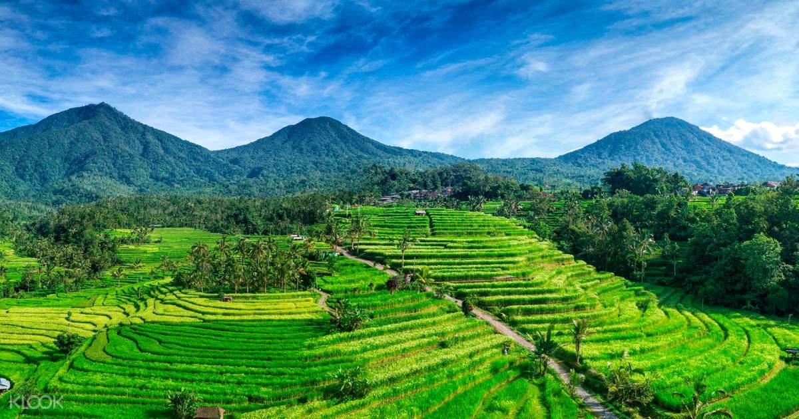
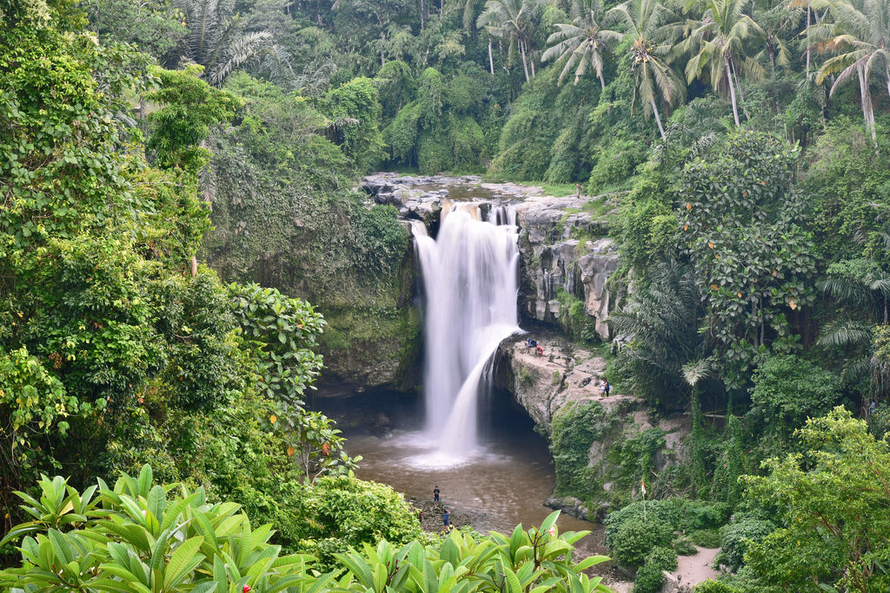
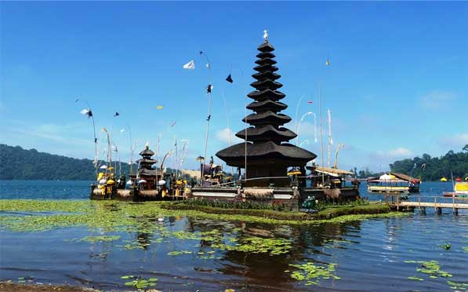
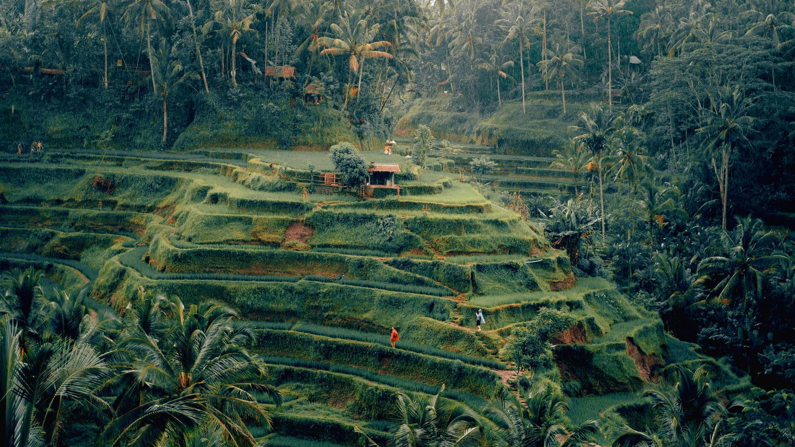

Tempat Wisata Di Bali Part 2 |
|||
|---|---|---|---|
| JATILUWIH | TEGENUNGAN | ||
|  | Jatiluwih di Bali memang cocok untuk Anda yang ingin menikmati suasana pedesaan di Pulau Dewata Bali. Suasana yang tenang, asri, dan alami sangat berbeda dengan daerah perkotaan yang penuh keramaian. Tempat ini bisa menjadi tujuan wisata bagi Anda yang penat dengan kehidupan kota dan ingin menghilangkan kejenuhan. Jatiluwih merupakan daerah yang berdekatan dengan Gunung Batukaru dan terletak pada ketinggian 700 m diatas permukaan laut. Sebagian besar daerahnya merupakan daerah persawahan yang dibuat berundak (bertingkat) atau dikenal dengan sawah berteras khas Bali yang akan membuat Anda semakin mengangguminya. Sawah ini menggunakan sistem pengairan subak yaitu sistem pengairan atau irigasi tradisional Bali yang berbasis masyarakat. Keunikan sawah berteras inilah yang membuat Jatiluwih dinominasikan masuk daftar UNESCO World Heritage sebagai warisan budaya dunia. Sesekali, Anda juga akan melewati sungai, pura, atau rumah-rumah penduduk yang masih sederhana. |  | Air terjun Tegenungan dikenal juga sebagai air terjun Kemenuh, mengambil nama desa tersebut. Objek wisata di Gianyar Bali ini, menjadi satu-satunya wisata air terjun terdekat dari kota Denpasar dan bandara, sehingga bisa mengisi aktifitas liburan anda.Keberadaan air terjun Tegenungan saat ini semakin populer saja, sebagai tempat rekreasi dan tujuan tour di pulau Dewata Bali. Objek wisata air terjun di Gianyar ini sebenarnya bernama air terjun Srongsongan, lalu kenapa sekarang dikenal dengan nama air terjun Tegenungan dan ada yang menyebut sebagai air terjun Blangsinga. Ini dikarenakan tempat air terjun ini bisa diakses dari dua tempat berbeda, dari sisi sebelah Barat dari Banjar Tegenungan, Desa Kemenuh, Kecamatan Sukawati, sehingga warga di kawasan ini menyebutnya sebagai air terjun Tegenungan. Air terjun yang mengalir di sungai Petani ini memang terletak di perbatasan antara banjar Tegenungan dan Blangsinga di kabupaten Gianyar. Saat berkunjung ke Tegenungan diusahakan untuk gunakanlah pakaian yang nyaman untuk bermain air, tetapi tetap indah untuk berfoto. |
| BEDUGUL | UBUD | ||
|  | Bedugul adalah sebuah daerah atau kawasan wisata di Bali yang terletak di desa Candikuning, kecamatan Baturiti, kabupaten Tabanan, terletak kira-kira 54 km dari Kota Denpasar. Bedugul Bali adalah sebuah daerah pegunungan yang mempunyai udara yang sejuk dengan pemandangan yang indah dari danau Beratan/Bratan yang membuat daerah ini menjadi tempat wisata yang menarik dan terkenal yang wajib dikunjungi di Bali dan salah satu tujuan wisata yang terbaik di pulau Dewata yang dikunjungi oleh ribuan wisatawan baik lokal maupun internasional. Sebagai kawasan pariwisata yang banyak dikunjungi wisatawan, baik wisatawan asing dan wisatawan Indonesia, kawasan Bedugul Bali memiliki banyak objek wisata menarik. Namun ada dua objek wisata yang sangat terkenal di kawasan pariwisata ini. Yaitu tempat wisata pura Ulun Danu Beratan dan Kebun Raya Bali. Selain objek wisata, kawasan ini juga ditunjang dengan sarana pariwisata lainnya. Seperti sarana akomodasi dan pilihan tempat makan. Karena tersedia banyak sarana akomodasi dan tempat makan, saat anda liburan ke kawasan ini, anda akan sangat mudah mencari penginapan atau tempat makan. Tersedia tempat makan sederhana sampai restoran. Selain itu, sebagian besar tempat makan menawarkan menu halal. |  | Ubud adalah sebuah desa adat sekaligus menjadi destinasi wisata di daerah kabupaten Gianyar, pulau Bali, Indonesia. Ubud terutama terkenal diantara para wisatawan mancanegara karena terletak di antara sawah dan hutan yang berjurang-jurang yang membuat pemandangan alam sangat indah. Selain itu, Ubud dikenal karena seni dan budaya yang berkembang sangat pesat dan maju. Denyut nadi kehidupan masyarakat Ubud tidak bisa dilepaskan dari kesenian. Di sini banyak pula terdapat galeri-galeri seni, serta arena pertunjukan musik dan tari yang digelar setiap malam secara bergantian di segala penjuru desa. Ubud menjadi salah satu tempat pusat pariwisata di Kabupaten Gianyar dan destinasi paling populer di pulau Bali, kawasan ini memiliki sarana penunjang yang lengkap mulai dari restaurant, hotel, layanan wisata, dan tentunya berbagai pementasan seni, baik itu berupa seni tari, seni lukis dan juga seni pahat, bisa anda temukan dengan mudah di kawasan ini. Begitu banyak objek wisata menarik dan indah di kawasan pariwisata Ubud ini, sehingga jika anda ingin menikmati semua yang tersimpan di sini, maka tidak cukup hanya sehari saja, jika anda jenuh dengan destinasi wisata alam pantai, maka Ubud menjadi tujuan tour yang ideal sebagai tujuan tour selain alam pantai di pulau Bali. |
Create With ♥ by Deva Dimastawan
©INFORMATIC STUDENT OF UDAYANA 2020
More Info :